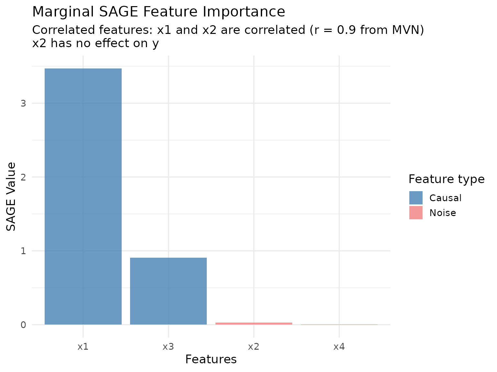
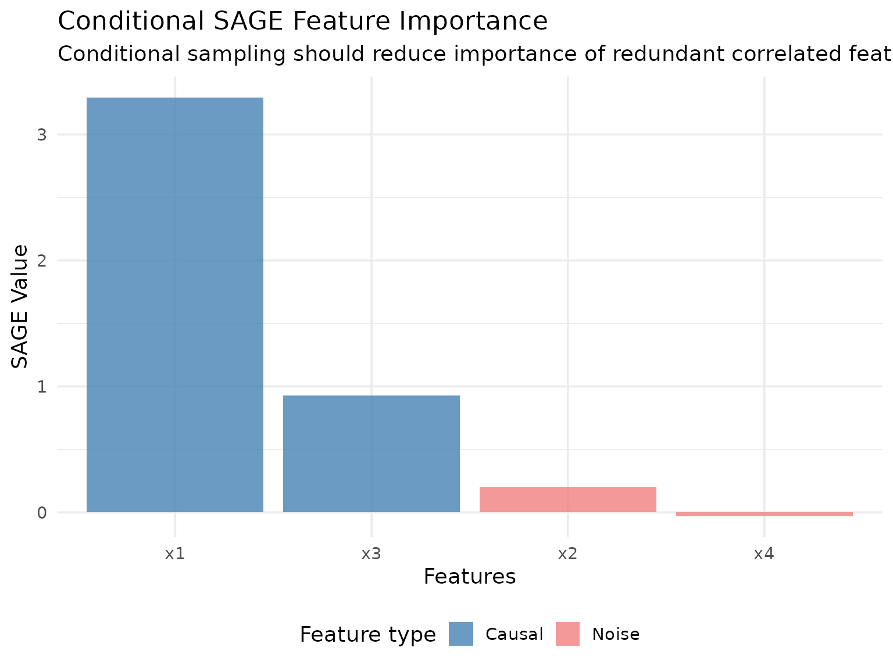
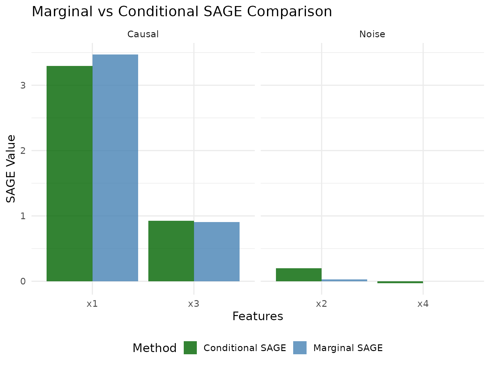
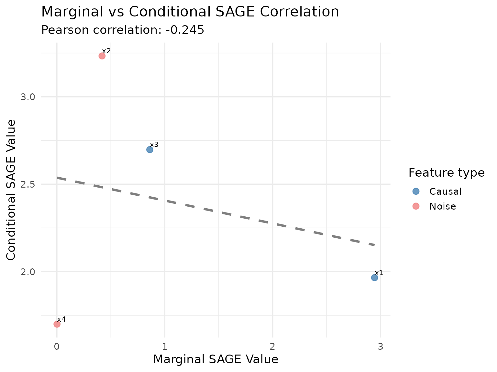

Introduction
Shapley Additive Global Importance (SAGE) is a feature importance method based on cooperative game theory that uses Shapley values to fairly distribute the total prediction performance among all features. Unlike permutation-based methods that measure the drop in performance when features are perturbed, SAGE measures how much each feature contributes to the model’s overall performance by marginalizing (removing) features.
The key insight of SAGE is that it provides a complete decomposition of the model’s performance: the sum of all SAGE values equals the difference between the model’s performance and the performance when all features are marginalized.
xplainfi provides two implementations of SAGE:
- MarginalSAGE: Marginalizes features independently (standard SAGE)
- ConditionalSAGE: Marginalizes features conditionally using ARF sampling
The Friedman1 Task
We’ll use the Friedman1 task generator to demonstrate SAGE methods. This synthetic regression task has a known ground truth that makes it easy to interpret results:
-
5 important features (
important1toimportant5) that actually affect the target -
5 unimportant features (
unimportant1tounimportant5) that are pure noise
The target function is:
The task has 500 observations with 10 features: important1, important2, important3, important4, important5, unimportant1, unimportant2, unimportant3, unimportant4, unimportant5. The target variable is y.
Let’s set up our learner and measure. We’ll use a random forest which should be able to capture the nonlinear relationships in the data:
Marginal SAGE
Marginal SAGE marginalizes features independently by averaging predictions over a reference dataset. This is the standard SAGE implementation described in the original paper.
# Create Marginal SAGE instance
marginal_sage = MarginalSAGE$new(
task = task,
learner = learner,
measure = measure,
n_permutations = 20L, # More permutations for stable results
max_reference_size = 100L
)
# Compute SAGE values
marginal_sage$compute()
#> feature importance
#> <char> <num>
#> 1: important1 3.822106318
#> 2: important2 4.772059968
#> 3: important3 1.118253503
#> 4: important4 5.893192811
#> 5: important5 1.784793110
#> 6: unimportant1 -0.047656519
#> 7: unimportant2 -0.048262424
#> 8: unimportant3 -0.076914131
#> 9: unimportant4 -0.083675223
#> 10: unimportant5 0.004202781
print(marginal_sage$importance)
#> feature importance
#> <char> <num>
#> 1: important1 3.822106318
#> 2: important2 4.772059968
#> 3: important3 1.118253503
#> 4: important4 5.893192811
#> 5: important5 1.784793110
#> 6: unimportant1 -0.047656519
#> 7: unimportant2 -0.048262424
#> 8: unimportant3 -0.076914131
#> 9: unimportant4 -0.083675223
#> 10: unimportant5 0.004202781Let’s visualize the results:
# Extract importance scores
marginal_results = marginal_sage$importance
marginal_results$method = "Marginal SAGE"
# Create a factor with proper ordering
marginal_results$feature = factor(
marginal_results$feature,
levels = marginal_results$feature[order(marginal_results$importance, decreasing = TRUE)]
)
# Create bar plot
ggplot(marginal_results, aes(x = feature, y = importance)) +
geom_col(aes(fill = grepl("^important", feature)), alpha = 0.8) +
scale_fill_manual(
values = c("FALSE" = "lightcoral", "TRUE" = "steelblue"),
labels = c("Noise features", "Important features"),
name = "Feature type"
) +
labs(
title = "Marginal SAGE Feature Importance",
subtitle = "Friedman1 task: 5 important features + 5 noise features",
x = "Features",
y = "SAGE Value"
) +
theme_minimal(base_size = 14) +
theme(axis.text.x = element_text(angle = 45, hjust = 1))
Conditional SAGE
Conditional SAGE uses conditional sampling (via ARF by default) to marginalize features while preserving dependencies between the remaining features. This can provide different insights, especially when features are correlated.
# Create Conditional SAGE instance
conditional_sage = ConditionalSAGE$new(
task = task,
learner = learner,
measure = measure,
n_permutations = 20L,
max_reference_size = 100L
)
#> Iteration: 0, Accuracy: 47.34%
#> Warning: executing %dopar% sequentially: no parallel backend registered
# Compute SAGE values
conditional_sage$compute()
#> feature importance
#> <char> <num>
#> 1: important1 4.66358094
#> 2: important2 4.35406218
#> 3: important3 1.24089600
#> 4: important4 6.30771863
#> 5: important5 1.50581856
#> 6: unimportant1 0.03857396
#> 7: unimportant2 -0.01510479
#> 8: unimportant3 0.01149043
#> 9: unimportant4 0.05352929
#> 10: unimportant5 -0.02463429
print(conditional_sage$importance)
#> feature importance
#> <char> <num>
#> 1: important1 4.66358094
#> 2: important2 4.35406218
#> 3: important3 1.24089600
#> 4: important4 6.30771863
#> 5: important5 1.50581856
#> 6: unimportant1 0.03857396
#> 7: unimportant2 -0.01510479
#> 8: unimportant3 0.01149043
#> 9: unimportant4 0.05352929
#> 10: unimportant5 -0.02463429Let’s visualize the conditional SAGE results:
# Extract importance scores
conditional_results = conditional_sage$importance
conditional_results$method = "Conditional SAGE"
# Create a factor with proper ordering
conditional_results$feature = factor(
conditional_results$feature,
levels = conditional_results$feature[order(conditional_results$importance, decreasing = TRUE)]
)
# Create bar plot
ggplot(conditional_results, aes(x = feature, y = importance)) +
geom_col(aes(fill = grepl("^important", feature)), alpha = 0.8) +
scale_fill_manual(
values = c("FALSE" = "lightcoral", "TRUE" = "steelblue"),
labels = c("Noise features", "Important features"),
name = "Feature type"
) +
labs(
title = "Conditional SAGE Feature Importance",
subtitle = "Friedman1 task: 5 important features + 5 noise features",
x = "Features",
y = "SAGE Value"
) +
theme_minimal(base_size = 14) +
theme(axis.text.x = element_text(angle = 45, hjust = 1))
Comparison of Methods
Let’s compare the two SAGE methods side by side:
# Combine results
combined_results = rbind(marginal_results, conditional_results)
# Create comparison plot
ggplot(combined_results, aes(x = feature, y = importance, fill = method)) +
geom_col(position = "dodge", alpha = 0.8) +
scale_fill_manual(values = c("Marginal SAGE" = "steelblue", "Conditional SAGE" = "darkgreen")) +
labs(
title = "Marginal vs Conditional SAGE Comparison",
subtitle = "Friedman1 task: Both methods should identify important features",
x = "Features",
y = "SAGE Value",
fill = "Method"
) +
theme_minimal(base_size = 14) +
theme(axis.text.x = element_text(angle = 45, hjust = 1)) +
facet_wrap(~ grepl("^important", feature),
labeller = labeller(.default = function(x) ifelse(x, "Important Features", "Noise Features")),
scales = "free_x")
Let’s also create a correlation plot to see how similar the rankings are:
# Merge the two results for correlation analysis
merged_results = merge(
marginal_results[, c("feature", "importance")],
conditional_results[, c("feature", "importance")],
by = "feature",
suffixes = c("_marginal", "_conditional")
)
# Calculate correlation
correlation = cor(merged_results$importance_marginal, merged_results$importance_conditional)
# Create scatter plot
ggplot(merged_results, aes(x = importance_marginal, y = importance_conditional)) +
geom_point(aes(color = grepl("^important", feature)), size = 3, alpha = 0.8) +
geom_smooth(method = "lm", se = FALSE, color = "gray50", linetype = "dashed") +
scale_color_manual(
values = c("FALSE" = "lightcoral", "TRUE" = "steelblue"),
labels = c("Noise features", "Important features"),
name = "Feature type"
) +
labs(
title = "Marginal vs Conditional SAGE Correlation",
subtitle = sprintf("Pearson correlation: %.3f", correlation),
x = "Marginal SAGE Value",
y = "Conditional SAGE Value"
) +
theme_minimal(base_size = 14) +
geom_text(aes(label = feature), hjust = 0, vjust = -0.5, size = 3)
#> `geom_smooth()` using formula = 'y ~ x'
Understanding the Results
Let’s analyze what we learned from this comparison:
# Calculate summary statistics
important_marginal = marginal_results$importance[grepl("^important", marginal_results$feature)]
noise_marginal = marginal_results$importance[grepl("^unimportant", marginal_results$feature)]
important_conditional = conditional_results$importance[grepl("^important", conditional_results$feature)]
noise_conditional = conditional_results$importance[grepl("^unimportant", conditional_results$feature)]
# Store for inline reporting
marg_imp_mean = round(mean(important_marginal), 4)
marg_imp_std = round(sd(important_marginal), 4)
marg_noise_mean = round(mean(noise_marginal), 4)
marg_noise_std = round(sd(noise_marginal), 4)
marg_separation = round(mean(important_marginal) / mean(abs(noise_marginal)), 2)
cond_imp_mean = round(mean(important_conditional), 4)
cond_imp_std = round(sd(important_conditional), 4)
cond_noise_mean = round(mean(noise_conditional), 4)
cond_noise_std = round(sd(noise_conditional), 4)
cond_separation = round(mean(important_conditional) / mean(abs(noise_conditional)), 2)
method_correlation = round(correlation, 3)
total_sage_marginal = round(sum(marginal_results$importance), 4)
total_sage_conditional = round(sum(conditional_results$importance), 4)Marginal SAGE Results
- Important features - Mean: 3.4781 | Std: 2.0038
-
Noise features - Mean: -0.0505 | Std: 0.0347
- Separation ratio: 66.7